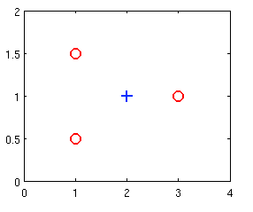

Q1: Suppose that you have trained a logistic regression classifier, and it outputs on a new example x a prediction hθ(x)=0.4. This means (check all that apply):
[x] Our estimate for P(y=1∣x;θ) is 0.4.
[ ] Our estimate for P(y=0∣x;θ) is 0.4.
[ ] Our estimate for P(y=1∣x;θ) is 0.6.
[x] Our estimate for P(y=0∣x;θ) is 0.6.
Q2: Suppose you have the following training set, and fit a logistic regression classifier hθ(x)=g(θ0+θ1x1+θ2x2)
incorrect
⎣⎢⎢⎢⎢⎡x11123x20.51.511y0010⎦⎥⎥⎥⎥⎤

Which of the following are true? Check all that apply.
[ ] J(θ) will be a convex function, so gradient descent should converge to the global minimum.
[x] Adding polynomial features (e.g., instead using hθ(x)=g(θ0+θ1x1+θ2x2+θ3x12+θ4x1x2+θ5x22)) could increase how well we can fit the training data. the key is in the COULD word
[ ]The positive and negative examples cannot be separated using a straight line. So, gradient descent will fail to converge.
[ ] Because the positive and negative examples cannot be separated using a straight line, linear regression will perform as well as logistic regression on this data. logistic wil outperform linear since cost function focusses on classification, not prediction
[x] At the optimal value of θ\thetaθ (e.g., found by fminunc), we will have J(θ)≥0. always positive cost funct
[ ] If we train gradient descent for enough iterations, for some examples x(i) in the training set it is possible to obtain hθ(x)(i)>1. in training impo
Q3: for logistic regression, the gradient is given by ...... Which of these is a correct gradient descent update for logistic regression with a learning rate of α? Check all that apply.
nr 2 doesnt have $x_j$ as final term. Nr 4 is not the correct vectorized implementation, as this would be (from notes)
θ:=θ−mαXT(g(Xθ)−y)
Q4: Which of the following statements are true? Check all that apply.
[x] The cost function J(θ) for logistic regression trained with m≥1 examples is always greater than or equal to zero. cost is always gt 0 since it is the negative log of a quantitiy less than one.
[ ] For logistic regression, sometimes gradient descent will converge to a local minimum (and fail to find the global minimum). This is the reason we prefer more advanced optimization algorithms such as fminunc (conjugate gradient/BFGS/L-BFGS/etc). GD always converges because cost function is convex. we use the others bc theyre faster and dont have to select learning rate
[ ] Linear regression always works well for classification if you classify by using a threshold on the prediction made by linear regression. linear often calssifies poorly since its training focusses on predicting real valued outputs
[x] The sigmoid function g(z)=1+e−z1 is never greater than one.
Q5: Suppose you train a logistic classifier with
hθ(x)=g(=6θ0+=−1θ1x1+=0θ2x2)
Suppose Which of the following figures represents the decision boundary found by your classifier?